1. 量化¶
1.1 为什么要量化¶
把 Float 类型(FP32、FP16)的模型参数和激活值，用整数(Int8、Int4) 来代替，同时还可能减少量化后模型推理的误差。
带来的好处:
减少模型的存储空间和显存的占用。
减少显存和 TensorCore 之间的数值传输量，从而加快模型推理时间。带宽限制
显卡对整数运算速度快于浮点型数据，从而加快模型推理时间。量化后浮点数位变少或者变为整数。
1.2 如何量化和反量化¶
量化：将连续/高精度值映射为离散/低精度值
反量化：将量化后的值映射回原始值域(有损过程)
目标：让 $x_{2f}$ 尽可能接近 $x_{1f}$
$$ x_{1f} \rightarrow 量化 \rightarrow x_{1q} $$
$$ x_{1q} \rightarrow 反量化 \rightarrow x_{2f} $$
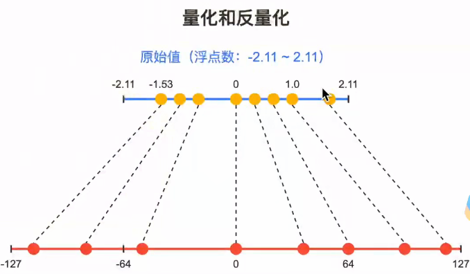
例：
1.3 INT4 非对称量化计算示例¶
假设有一组 FP16 张量：
$$ x = [1.25, -0.5, 3.75, -2.0] $$
现在将其量化为 无符号 INT4。INT4 一共能表示 $2^4=16$ 个整数，因此量化后的取值范围为：
$$ q \in [0, 2^4-1] = [0, 15] $$
这里使用的是非对称量化 (asymmetric quantization)：原始浮点数的最小值映射到 $0$，最大值映射到 $15$。
步骤 1：找出原始张量的最小值和最大值¶
$$ x_{min}=-2.0, \qquad x_{max}=3.75 $$
步骤 2：计算缩放因子 scale¶
缩放因子表示量化整数每增加 $1$，原始浮点数增加多少：
$$ scale=\frac{x_{max}-x_{min}}{2^n-1} $$
代入 $n=4$：
$$ scale=\frac{3.75-(-2.0)}{2^4-1}=\frac{5.75}{15}\approx0.3833 $$
步骤 3：应用量化公式¶
$$ q=\operatorname{round}\left(\frac{x-x_{min}}{scale}\right) $$
并将结果截断到 INT4 的合法范围：
$$ q=\operatorname{clamp}(q, 0, 15) $$
逐个计算：
| 原始值 $x$ | 量化计算 | INT4 值 $q$ |
|---|---|---|
| $1.25$ | $round((1.25-(-2.0))/0.3833)=round(8.48)$ | $8$ |
| $-0.5$ | $round((-0.5-(-2.0))/0.3833)=round(3.91)$ | $4$ |
| $3.75$ | $round((3.75-(-2.0))/0.3833)=round(15)$ | $15$ |
| $-2.0$ | $round((-2.0-(-2.0))/0.3833)=round(0)$ | $0$ |
因此：
$$ [1.25, -0.5, 3.75, -2.0] \xrightarrow{INT4} [8, 4, 15, 0] $$
步骤 4：反量化并观察误差¶
反量化公式为：
$$ \hat{x}=q\times scale+x_{min} $$
量化值 $[8, 4, 15, 0]$ 反量化后约为：
$$ \hat{x}=[1.0667, -0.4667, 3.75, -2.0] $$
可以看到，$x_{min}$ 和 $x_{max}$ 恰好落在量化网格端点，能够被精确恢复；中间值会因为映射到有限个离散整数而产生量化误差（round 过程）。位宽越低，量化间隔越大，潜在误差也越明显。
x = [1.25, -0.5, 3.75, -2.0]
bits = 4
qmin, qmax = 0, 2**bits - 1
x_min, x_max = min(x), max(x)
scale = (x_max - x_min) / (qmax - qmin)
# 量化
q = [max(qmin, min(qmax, round((value - x_min) / scale))) for value in x]
# 反量化
x_hat = [value * scale + x_min for value in q]
print(f'原始张量: {x}')
print(f'最小值: {x_min}, 最大值: {x_max}, scale: {scale:.4f}')
print(f'INT4 量化值: {q}')
print(f'反量化结果: {[round(value, 4) for value in x_hat]}')
print(f'绝对误差: {[round(abs(original - restored), 4) for original, restored in zip(x, x_hat)]}')
原始张量: [1.25, -0.5, 3.75, -2.0] 最小值: -2.0, 最大值: 3.75, scale: 0.3833 INT4 量化值: [8, 4, 15, 0] 反量化结果: [1.0667, -0.4667, 3.75, -2.0] 绝对误差: [0.1833, 0.0333, 0.0, 0.0]
1.4 量化矩阵乘法的计算展开¶
量化推理中，激活矩阵 $X$ 与权重矩阵 $W$ 都可能以整数形式保存。设它们的量化值分别是 $X_q、W_q$，缩放因子分别是 $s_x、s_w$，零点分别是 $Z_x、Z_w$，则反量化关系为：
$$ X_f=(X_q-Z_x)\times s_x, \qquad W_f=(W_q-Z_w)\times s_w $$
其中 $X_f、W_f$ 是浮点数形式的激活和权重。将它们代入矩阵乘法：
$$ \begin{aligned} X_f W_f &= (X_q-Z_x)\times s_x \; @ \; (W_q-Z_w)\times s_w \\n &=s_xs_w\left(X_qW_q-X_qZ_w-Z_xW_q+Z_xZ_w\right) \end{aligned} $$
图中最后两项写成 $-W_qZ_x+Z_xZ_w$。当零点是标量时，$Z_xW_q$ 与 $W_qZ_x$ 数值相同；实际矩阵计算中需按 zero point 的粒度（per-tensor、per-channel 或 per-group）正确广播和求和。
这个展开式的核心意义是：不必先把每一个整数元素完整反量化为浮点数再做矩阵乘法。主计算项 $X_qW_q$ 可以直接使用 INT8/INT4 矩阵乘法硬件完成，随后再依据 scale 和 zero point 进行少量修正，从而减少访存和浮点计算。
零点为 0 时：对称量化更简单¶
若采用对称量化，通常 $Z_x=Z_w=0$，公式可化简为：
$$ X_fW_f=s_xs_w(X_qW_q) $$
这也是对称量化在高性能推理中常见的原因之一：没有与 zero point 有关的修正项，计算路径更直接。
非对称量化的修正项¶
当 $Z_x、Z_w$ 不为 0 时，除了整数矩阵乘法 $X_qW_q$ 外，还需要计算：
- $X_qZ_w$：与权重零点有关的修正；
- $Z_xW_q$：与激活零点有关的修正；
- $Z_xZ_w$：两者零点共同引入的常数修正。
若 $X_q\in\mathbb{R}^{M\times K}$、$W_q\in\mathbb{R}^{K\times N}$，最后一项在逐元素展开后还会沿着归约维度 $K$ 累加，因此标量 zero point 的常数项实际为 $KZ_xZ_w$。
1.5 模型量化方式¶
1.5.1 训练后动态量化(Post Dynamic Quantization)¶
权重的量化范围提前确定，但是激活值的量化范围是在真正推理的时候，根据当前输入动态确定的，因此需要在每一层运算之前都对于输入激活值进行计算量化参数。
代表方法: LLM.int8() 和 QLoRA
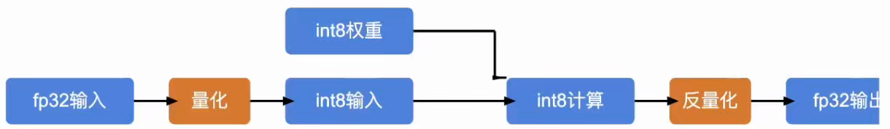
实现方式：
将训练好的模型权重量化为int8，并保存量化参数。
在推理推理时，对每一层输入先fp32转换成int8，然后进行int8运算后再转化为fp32。
在每一层前插入fp32转换成int8的逻辑或在后面进行反量化计算。
在每一层输出前将int8结果量化为fp32。
将该运算结果传入到下一层。
问题:
- 每一次推理每一层都要对输入统计量化参数，耗时。
解决：用有代表性的数据跑一遍整个网络，通过统计得到每层大概的量化参数。
- 每一层计算完成都转化为fp32，占用显存带宽。
解决：这一层的输出是下一层的输入，下一层还是要量化，不如在这一层直接量化好再传给下一层。
1.5.2 训练后校正量化(Post Calibration Quantization)¶
在真正部署之前，先拿一批具有代表性的校准数据跑一遍模型，观察激活值的分布，然后提前确定量化参数。这样就避免了每一层对于量化参数的计算。
代表方法: GPTQ、AWQ
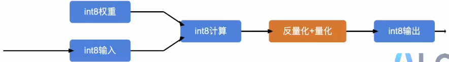
实现方式：
将训练好的模型权重量化为int8，并保存量化参数。
校准(calibration):利用一组有代表性的校准数据进行处理，用这些数据在神经网络每一层产生的激活值均值或高值估算量化参数。这样就不在推理时每次依赖模型实际激活值估算量化参数。
在每一层对上层的int8权重和int8激活值进行计算。
在每一层输出时将结果反量化为fp32，同时根据校准产生的激活值量化参数（因为每一层的量化参数不同，在上一层得到的结果不符合下面层的量化标准，因此需要将int8结果反量化得到原始值，再根据下一层尺度进行量化），把激活值量化int8，把量化参数嵌入反量化函数逻辑中。
将int8的激活值和它的量化参数传入到下一层。
1.5.3 Bits And Bytes 量化¶
INT8 量化本质上是在用有限的整数取值范围，去近似原来的连续浮点数。而 outlier feature（异常特征）会把整个量化范围“撑得很大”，导致绝大多数正常值只能用很粗的刻度表示。
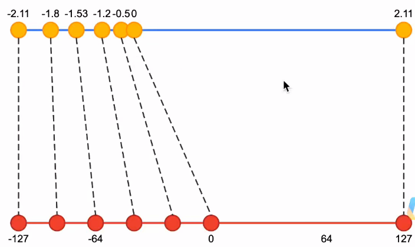
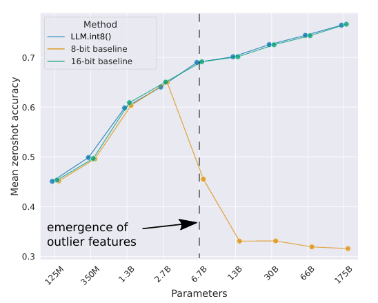
原论文图：当模型规模达到大约 6.7B 参数后，Transformer 的激活值中开始出现大量具有异常大幅值的 outlier features（异常特征）。普通的 INT8 量化因此性能突然崩掉，而 LLM.int8() 通过混合精度分解解决了这个问题。
例：异常特征如何影响量化效果¶
考虑一组没有明显异常值的激活：
$$ x=[-1.0,-0.8,-0.5,-0.2,0.1,0.4,0.7,1.0] $$
下面使用真实的 INT8 对称量化。INT8 的整数范围可取 $[-127,127]$，并令 zero point $Z=0$。为了充分利用整数范围，缩放因子取当前张量的最大绝对值除以 $127$：
$$ scale_{normal}=\frac{1.0}{127}\approx0.007874 $$
量化与反量化公式为：
$$ q=round(x/scale), \qquad \hat{x}=q\times scale $$
没有异常值时，量化结果如下：
| 原始值 $x$ | INT8 值 $q$ | 反量化值 $\hat{x}$ | 绝对误差 |
|---|---|---|---|
| $-1.0$ | $-127$ | $-1.0000$ | $0.0000$ |
| $-0.8$ | $-102$ | $-0.8031$ | $0.0031$ |
| $-0.5$ | $-64$ | $-0.5039$ | $0.0039$ |
| $-0.2$ | $-25$ | $-0.1969$ | $0.0031$ |
| $0.1$ | $13$ | $0.1024$ | $0.0024$ |
| $0.4$ | $51$ | $0.4016$ | $0.0016$ |
| $0.7$ | $89$ | $0.7008$ | $0.0008$ |
| $1.0$ | $127$ | $1.0000$ | $0.0000$ |
这时每个整数格子只相差约 $0.007874$，最大误差不超过半个格子，约为 $0.003937$。也就是说，正常特征的细节被较好地保留。
现在假设同一层中出现一个异常特征 $10.0$：
$$ x'=[-1.0,-0.8,-0.5,-0.2,0.1,0.4,0.7,1.0,10.0] $$
INT8 的可表示范围没有变化，但量化参数必须覆盖新的最大绝对值 $10.0$，因此需要重新计算：
$$ scale_{outlier}=\frac{10.0}{127}\approx0.07874 $$
此时每一个整数格子相差约 $0.07874$，已经是原来的 $10$ 倍。正常特征虽然不会全部变成 $0$，但只能使用很少的 INT8 级别，误差明显变大：
| 原始值 $x$ | INT8 值 $q$ | 反量化值 $\hat{x}$ | 绝对误差 |
|---|---|---|---|
| $-1.0$ | $-13$ | $-1.0236$ | $0.0236$ |
| $-0.8$ | $-10$ | $-0.7874$ | $0.0126$ |
| $-0.5$ | $-6$ | $-0.4724$ | $0.0276$ |
| $-0.2$ | $-3$ | $-0.2362$ | $0.0362$ |
| $0.1$ | $1$ | $0.0787$ | $0.0213$ |
| $0.4$ | $5$ | $0.3937$ | $0.0063$ |
| $0.7$ | $9$ | $0.7087$ | $0.0087$ |
| $1.0$ | $13$ | $1.0236$ | $0.0236$ |
| $10.0$ | $127$ | $10.0000$ | $0.0000$ |
这个例子说明：一个 $10.0$ 的异常特征把量化动态范围从 $[-1,1]$ 拉宽到约 $[-10,10]$，scale 由 $0.007874$ 增大到 $0.07874$。异常值本身可以被准确表示，但 $[-1,1]$ 的正常特征只占用约 $[-13,13]$ 的 27 个整数级别，而不是原先接近完整的 255 个级别，因此误差放大约 10 倍。
这正是 outlier feature 难处理的原因：它只占少数位置，却会影响同一组量化参数下所有正常值的精度。LLM.int8() 等方法通常将异常通道单独保留在更高精度中，其余通道继续使用 INT8，从而兼顾精度和推理效率。
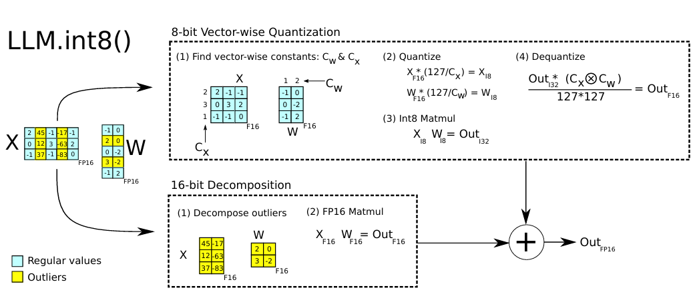
LLM.int8()实现方法：将异常值按照原本FP16计算，其余部分按照INT8进行量化
这里值得注意的是，在LLM.int8()中，scale的计算是 vector-wise，也就是说 scale 的数量和 hidden vector 的维度数量一致
| 概念 | 怎么划分 vector | scale |
|---|---|---|
| Token-wise / Row-wise | 每个 token 一条 hidden vector | 每个 token 一个 scale |
| Vector-wise | 按指定维度切出来的 vector | 每个 vector 一个 scale |
| Tensor-wise | 整个 Tensor 一个整体 | 整个 Tensor 一个 scale |
2026/8/29¶
1.5.4 QLora int4 量化¶
- 提出问题
在NLP领域,对于下游任务进行大规模训练语言模型的微调已经成为一种重要的做法。一般而言，我们会采用对原有的预训练模型进行全量微调的方法来适配下游任务。然而，对于大规模的模型，微调过程可能会消耗大量的内存和计算资源，使得对于模型的微调产生了一定的门槛。
核心要点
- QLoRA:通过 4-bit 量化的 BaseModel 在保持特性性能的同时减少内存使用，使模型微调的门槛大大降低。
核心方法是提出了 NormalFloat 数据类型进行量化。
核心思想是通过量化降低基座模型显存占用，使得65B规模在单GPU上可以完成训练。
分位量量化 (Quantile Quantization)¶
量化是将连续变量的数值变换到预定离散上的某一个值。以 4-bit 为例，映射后的参数取值只能从 0~15 中选一个。通常的量化方法是量化后直接连接最近的浮点值(有偏向的量化)，这种量化方法需要明确参数的范围，量化后参数整体的分布与原始的分布差别很大。例如出现一个异常特征，可能让区间分布变得很稀疏，这种效果显着干扰模型。
为了避免这种情况,引入了分位量化 (Quantile Quantization)。以量化到4-bit为例，共有16个数值可以选择，量化可以把每个参数数值从小到大进行排序并等分为16份，每一份映射一个值。这样的量化方法量化后的参数数值更均匀分布在原始分布的整体形态下。
NormFloat量化¶
补：神经网络的很多权重近似服从高斯分布：$\mathcal N(0,\sigma^2)$
上述的量化会影响引入明显的计算开销，因为每次有参数输入进来都需要实时进行排序并转换。由于预测值的参数基本上都服从均值为0的高斯分布,可以找到概率密度为1、1 的范围时,同时可以把该区域定义为{0,1,0}这样一个倍数,将极值设置为1、1的范围中。选择保留这个范围内的数据做动态的分段,不再均匀划分分布,但还是保证整体分布形态一致。
但是这种量化在每一个batch、每一层的权重不是完全的重上了一致,就会丧失全局的精度语义。为此打一个配比,即将均值和方差都独立编码分别为32位,参数还是定义在0 和1的范围上。
将所有x除以最大绝对值,归一化到[-1,1]之间。
NF4 查表量化计算示例¶
NormFloat（通常指 QLoRA 中的 NF4，NormalFloat 4-bit）不是把数值均匀切成 16 个区间，而是使用一组根据标准正态分布分位点设计的查找表（codebook）。因此，归一化后的浮点数需要映射到最接近的码本值，再用对应的 4 bit 编码保存。
原始权重为：
$$ x=[1.532,-0.823,0.412,0.232] $$
1. 归一化¶
取张量的最大绝对值作为缩放因子：
$$ scale=\max(|x|)=1.532 $$
将所有权重除以 scale，得到 $[-1,1]$ 附近的归一化结果：
$$ x_{norm}=x/scale\approx[1.000,-0.537,0.269,0.151] $$
2. 查表量化¶
NF4 预先准备好 16 个代表值，每个归一化权重选择距离最近的码本项，并保存对应的 4 bit 编码。为了突出计算流程，下面使用图片中对应的近似查表结果：
NF4 的完整映射表如下。索引是实际存储的 4 bit 编码，归一化值是反量化时查回的 codebook 值：
| 归一化值（Normalized Value） | 索引（Index） |
|---|---|
| $-1.0000000000$ | $0$ |
| $-0.6961928010$ | $1$ |
| $-0.5250730515$ | $2$ |
| $-0.3949174881$ | $3$ |
| $-0.2844413817$ | $4$ |
| $-0.1847734302$ | $5$ |
| $-0.0910500363$ | $6$ |
| $0.0000000000$ | $7$ |
| $0.0795802996$ | $8$ |
| $0.1609302014$ | $9$ |
| $0.2461123019$ | $10$ |
| $0.3379152417$ | $11$ |
| $0.4407098293$ | $12$ |
| $0.5626170039$ | $13$ |
| $0.7229568362$ | $14$ |
| $1.0000000000$ | $15$ |
对于前面的归一化数组，逐个寻找最近的码本值：
| 归一化输入 | 最近码本值 | 索引 |
|---|---|---|
| $1.000$ | $1.0000000000$ | $15$ |
| $-0.537$ | $-0.5250730515$ | $2$ |
| $0.269$ | $0.2461123019$ | $10$ |
| $0.151$ | $0.1609302014$ | $9$ |
因此，原始浮点数组被压缩为 4 个 4 bit 编码：
$$ [1.000,-0.537,0.269,0.151]\xrightarrow{NF4}[15,2,10,9] $$
这里的
[15, 2, 10, 9]不是普通线性量化公式直接计算出的整数，而是 NF4 查找表中的索引。码本值本身才代表归一化后的近似浮点数。不同实现可能对码本末位保留的精度略有差异，但索引顺序和查表思想不变。
3. 反量化¶
推理时先根据 4 bit 索引查回 NF4 码本值，再乘以保存的缩放因子：
$$ x_{dequant}=codebook[q]\times scale $$
查表得到的归一化值约为：
$$ [1.0,-0.5250,0.2461,0.16093] $$
再乘回 scale=1.532：
$$ x_{dequant}\approx[1.532,-0.804,0.377,0.247] $$
可以看到，反量化结果与原始值 [1.532,-0.823,0.412,0.232] 接近但不完全相同，这就是 4 bit 量化带来的误差。NF4 的优势在于码本按照正态分布的密度设计：分布密集的区域拥有更合适的量化刻度，比简单均匀切分更适合神经网络权重。
分块量化带来的额外存储开销¶
NF4 通常不是对整个模型只保存一个 scale，而是把参数切成多个 block（分块），每个 block 单独保存缩放因子。这样能够适应不同分块的数值范围，但也会引入额外的 scale 存储开销。
假设每个 block 包含 64 个参数，每个参数使用 4 bit NF4 保存：
$$ 64\times4=256\text{ bit}=32\text{ byte} $$
如果每个 block 额外保存一个 32 bit 的 FP32 scale，那么 scale 占用：
$$ \frac{32\text{ bit}}{64\times4\text{ bit}}=\frac{32}{256}=12.5\% $$
也就是说，虽然主体参数已经压缩为 4 bit，但每 64 个参数还要额外保存一个 32 bit scale，实际存储开销会比单纯的 4 bit 参数增加 12.5%。当模型规模很大时，这部分开销也不可忽略。
双重量化（Double Quantization）¶
QLoRA 使用双重量化进一步压缩 scale：先按照 64 个参数一组进行 INF4 量化；然后把大量 block 的 FP32 scale 再组成新的分组，对这些 scale 进行一次 8 bit 量化。也就是：
原始参数 → 第一次量化 → NF4 参数 + FP32 scale
FP32 scale → 第二次量化 → 8 bit scale + 更高层的缩放因子
假设每个第一次量化的 block 有 64 个参数，先得到 1 个 FP32 scale；再把连续 256 个 block 的 scale 放在一起做第二次量化。这样对应的原始参数数量为：
$$ 256\text{ 个 block}\times64\text{ 个参数}=16384\text{ 个参数} $$
二次量化后，这 256 个 scale 各用 8 bit 保存，同时还需要为这一组 scale 保存 1 个 32 bit 的更高层 scale。因此，scale 元数据占用：
$$ \frac{256\times8+32}{256\times64\times4}\times100\%\approx3.174\% $$
其中分子里的 $256\times8$ 是 256 个 8 bit scale 索引，$+32$ 是这组 scale 共享的一个 FP32 scale；分母是这 256 个 block 中原始 4 bit 参数的总大小。代入后：
$$ \frac{2048+32}{65536}\times100\%\approx3.174\% $$
因此，双重量化把额外开销从单重量化的 $12.5\%$ 降低到了约 $3.174\%$。
双重量化的核心不是再次量化原始权重，而是对第一次量化产生的 scale 再进行量化，从而减少量化元数据的占用。
双重量化的反量化过程¶
由于 scale 本身也被量化，推理时需要按照相反顺序恢复：
- 先反量化第二层的 scale，恢复第一次量化所需的近似 FP32 scale；
- 再使用恢复出的 scale，对 INF4 参数进行反量化，得到近似的原始权重。
因此双重量化的计算链路可以写成：
$$ scale_{fp32}\leftarrow dequant(scale_{8bit}) $$
$$ weight_{fp16}\approx dequant(NF4\_weight,scale_{fp32}) $$
双重量化用少量额外计算换取了更低的显存占用，这也是 QLoRA 能够在有限显存上微调大模型的重要原因之一。
QLora 配置参数
import torch
from transformers import BitsAndBytesConfig
bnb_config = BitsAndBytesConfig(
# load_in_8bit=True,
# 可选：对于更激进的量化如4bit，可以设置：
load_in_4bit=True,
bnb_4bit_use_double_quant=True, # 是否对于scale再进行一次量化
bnb_4bit_quant_type="nf4", # 使用NormalFloat进行映射
bnb_4bit_compute_dtype=torch.bfloat16 # 反量化后参与计算的数据类型
)
1.5.5 GPTQ/AWQ/GGUF¶
GPTQ (Accurate Post-Training Quantization for Generative Pre-trained Transformers)¶
技术原理与特点:
GPTQ (Quantize-aware training 或者更常见的是离线量化策略)通常采用块状或分组权重量化(blockwise/groupwise)，在保证模型精度的同时显着压缩模型体积、减小显存开销。属于训练后量化。
通过在离线阶段对每一层/块的权重逐步调整（逐层或逐块的最优量化方案）,可以最大化保留模型精度。
GPTQ 的常用量化范围是2~8bit，且在4bit 或 8 bit 量化时一般损失较小。
如果使用 Auto-GPTQ 版本 >= 0.4.2，可以在CPU上进行量化推理（推理速度有限制）,同时也支持 LoRA 等微调方法对量化模型进行再训练(PEFT/LoRA)。
优势:
性能较好:在 4bit 或8bit 量化下,推理速度与精度的平衡性好。
灵活性:GPTQ 在不同硬件环境上都能工作；Auto-GPTQ>=0.4.2也可支持 CPU 场景(虽然速度会较低)。
微调支持:可结合 PEFT 对量化后的模型进行二次微调,减少硬件资源需求。
使用场景:
多 GPU 服务器:在有限显存、需兼顾推理速度和结果准确度的场景下进行推理或小规模二次训练。
较大规模模型:比如13B、30B 级别模型,用GPTQ 量化后节省显存,避免动辄需要高端大显存GPU。
高精度需求:希望在量化后依然保持较好效果,GPTQ 的块状量化策略有助于维持模型精度。
加权平均质量
技术原理与特点:
AWQ (Activation-aware Weight Quantization)¶
强调了量化时对激活分布的分析,力求在不改动模型结构、不进行大量微调的情况下,找到对每一层最优的量化比例。
以后训练量化(Post-training Quantization)为主,不需要在大规模数据集上进行完整地再训练,只需对模型的激活分布进行统计与修正。
量化范围亦可在2~8bit,但目前大多数场景下主要使用 4bit 或 8 bit。
优势:
无需大规模训练:通过分析并纠正模型激活分布,减少了微调资源需求和时间开销。
极端低比特量化:可将模型压缩到 2bit~8bit,尤其在 4bit 或更低比特情况下仍力求维持对合理的精度。
推理速度快:对GPU推理较为友好，小体积、高速访问。
使用场景:
极致压缩需求:对推理速度、模型大小有极高要求,愿意在极端低比特(如2bit~4 bit) 上进行探索的研究或应用。
环境受限:在显存或GPU资源极度不足,但又希望尽可能保留模型可用性的项目。
仅 GPU 推理:当前AWQ暂不支持在CPU上做推理,也暂不支持进行微调。
gguf 格式¶
技术原理与特点:
Llama.cpp 是以C++实现对 LLAMA 等衍生模型进行高效推理的项目,可在CPU、GPU、移动端等多种设备上部署。
gguf 格式是新一代的模型文件格式,用来替代之前的ggml/ggjt等,支持更多量化方案和新特性,使模型部署更便捷。
量化等级非常细化:从2 bit 到 8 bit,每个等级还细分了多种方法(例如q4_0、q4_K、q5_K等),开发者/用户可根据硬件性能和精度需求自行选择。
Llama.cpp 支持LORA方式对量化后的模型进行微调,保留在CPU/GPU上进行增量训练或推理的能力。
优势:
跨平台支持:可在手机、树莓派、单卡小显存等多环境下运行,尤其在CPU 场景下表现突出。
量化选择灵活:提供了丰富的量化方式,可在速度、精度、模型大小之间进行取舍。
生态活跃: Ilama.cpp 社区活跃且更新快,经常针对新模型或新量化策略做支持。
微调支持:已经支持对量化模型进行LoRA 微调(例如QLoRA、PEFT+LORA)。
使用场景:
多环境部署:手机端、PC端、内存受限环境等,对易用性和通用性有较高要求。
离线场景:不能依赖云服务器,需要本地 CPU 推理,保证数据隐私或提升可控性。
中小型项目研究:对模型深度定制或二次微调(LoRA)进行实验,llama.cpp 提供了灵活的开发体验。
三种量化方式的实现方式与测试结果¶
GPTQ：逐层、分组的权重误差补偿¶
GPTQ 是离线训练后量化方法。它使用少量校准数据逐层处理权重，把权重划分为多个 group，量化时利用近似二阶信息估计误差，并将误差补偿到同组中尚未量化的权重上，目标是降低整层输出误差。典型流程是：校准数据统计 → 按层/按组求解量化 → 误差补偿 → 保存量化权重与 scale → GPU 推理。
AWQ：根据激活敏感度保护重要权重¶
AWQ 先用校准数据观察激活分布，找出对输出影响较大的通道或权重，再搜索缩放系数，使这些显著权重在低比特量化后仍能较好保留，最后进行分组量化。它通常不需要完整再训练，常见于 4 bit GPU 推理。
GGUF：面向 llama.cpp 的模型格式与量化方案¶
GGUF 首先是一种模型文件格式，不是单独的量化算法。它统一保存模型张量、元数据、分词器和量化信息，配合 llama.cpp 在 CPU、CUDA 或 Metal 等后端运行。转换为 GGUF 后可以选择 Q4_K_M、Q5_K_M、Q8_0 等量化等级，在模型大小、速度和精度之间取舍。
推理速度与显存测试结果¶
下表中的速度单位为 token/s，三列分别对应最大上下文长度限制为 512、1024、2048 的测试结果：
| 量化方式 | 运行设备 | 位宽 | 初始显存占用 | 限制 512 | 限制 1024 | 限制 2048 |
|---|---|---|---|---|---|---|
| BnB | RTX4090 × 1 | 4 bit | 21600 MiB | 11.5 | 9.1 | 9.8 |
| GPTQ | RTX4090 × 1 | 4 bit | 21810 MiB | 16.8 | 16.4 | 13.0 |
| AWQ | RTX4090 × 1 | 4 bit | 22202 MiB | 26.1 | 21.3 | 15.8 |
| 无量化 | A800 × 1 | 16 bit | 67000 MiB | 13.7 | 11.5 | 11.1 |
从结果看，在相同 RTX4090 和 4 bit 条件下，AWQ 速度最高，GPTQ 次之，BnB 较低；512 限制下分别为 26.1、16.8 和 11.5 token/s。4 bit 模型显存约为 21~22 GB，明显低于 16 bit 无量化模型的 67 GB。上下文长度增加后，量化模型速度总体下降，说明 KV Cache 和显存带宽也会影响推理性能。
无量化一行使用的是 A800，而其他三行使用 RTX4090，因此不能把这些数值视为严格公平的速度排名。严谨对比时应固定模型、硬件、输入、batch size 和生成参数，只改变量化方式。
2026/9/1¶
蒸馏和剪枝¶
1. 蒸馏¶
原理：将待压缩的模型作为教师模型,将体积更小的模型作为学生模型,让学生模型在教师模型的监督下进行优化,将学生模型学习到教师模型的概率分布,通过 KL 散度进行控制。
对于大模型的知识蒸馏，主要分为两种方法:
黑盒知识蒸馏¶
使用大模型生成数据，通过这些数据去微调更小的模型，来达到蒸馏的目的。缺点是蒸馏效率低，优点是实现简单。
优点:
实现简单,只需大模型生成数据、小模型学习
不需要直接访问大模型的参数或中间状态
可以生成针对特定任务的专用数据，让小模型具备大模型某个方面的能力
缺点:
蒸馏效率低，需要大量样本
生成的数据可能包含大模型的偏见或错误
无法直接学习大模型内部表示。内部参数不能学到。
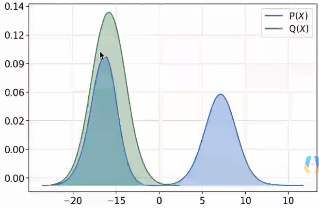
黑盒蒸馏：学生模型输出拟合教师模型选择结果即可
白盒知识蒸馏¶
获取学生模型和教师模型的输出概率分布(或者中间隐藏层的概率分布)，通过 KL 散度将学生模型的概率分布向教师模型对齐。
使学生模型的某一层（或某几层）的输出特征（激活值）与教师模型对应层（或经过变换后的对应层）的输出特征相似；甚至让学生模型学习模仿教师模型的注意力分布。
学生模型学到的不只是标签结果，还有教师选择标签的思路。
2. 剪枝（现在很少用）¶
迭代过程：剪枝→评估→微调→再剪枝，直到达到目标模型大小
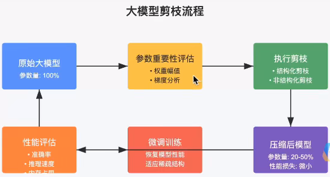
首先我们有一个完整训练好的大模型(如GPT、LLaMA等)，通常包含数十亿甚至数千亿参数
参数重要性评估剪枝的核心是确定哪些参数可以移除:
基于幅值的评估：删除绝对值小的权重，因为它们对输出的贡献较小
基于梯度的评估：计算参数对损失函数的影响程度
基于激活的评估：评估神经元的激活情况，移除"死"神经元
基于注意力头的评估：评估 Transformer 模型中各注意力头的重要性
- 执行剪枝
根据重要性评估结果,有两种主要剪枝方式：
非结构化剪枝：移除单个权重参数，产生稀疏矩阵
结构化剪枝：移除整个神经元、注意力头或层，保持矩阵结构规整，更便于硬件加速
- 微调训练
剪枝后模型性能通常会下降，需要进行微调
方法：使用原始训练数据或高质量数据子集，以较低学习率训练，防止过拟合，从而使模型适应新的稀疏结构
3. Flash Attention¶
3.1 HBM 与 SRAM：GPU 的两级存储¶
GPU 计算 Attention 时，主要会在 HBM(High Bandwidth Memory) 和片上 SRAM(Static RAM) 之间搬运数据。二者的特点如下：
| 类型 | 位置 | 容量 | 带宽 |
|---|---|---|---|
| HBM | 显存 | 几十 GB | 约 1-2 TB/s |
| SRAM | GPU 芯片内部 | 几 MB | 约 20 TB/s |
HBM 容量大，能够保存完整的模型参数、激活值和 KV Cache；SRAM 容量很小，但距离计算单元 (Tensor Core) 更近、带宽更高。SRAM 的带宽通常比 HBM 高约一个数量级，因此 Flash Attention 的目标不是改变 Attention 的数学结果，而是尽量减少对 HBM 的读写，并充分利用 SRAM。
3.2 标准 Attention 的 HBM 带宽瓶颈¶
设序列长度为 $N$，单头维度为 $d$。标准 Attention 的计算为：
$$ S=\frac{QK^T}{\sqrt{d}},\qquad P=softmax(S),\qquad O=PV $$
其中 $S$ 和 $P$ 的形状都是 $N\times N$。传统实现为了将每一个算子拆开执行，通常需要在 HBM 与 SRAM 之间反复读写：
- 计算 $S=QK^T/\sqrt{d}$，将 $N\times N$ 的分数矩阵 $S$ 写入 HBM；
- 从 HBM 读回 $S$，计算 $P=softmax(S)$，再将同样大小的 $P$ 写回 HBM；
- 从 HBM 读回 $P$，计算 $O=PV$，最后写回输出 $O$。
随着 $N$ 增大，$N\times N$ 中间矩阵会迅速膨胀。例如序列长度翻倍时，中间矩阵的大小会变为原来的 4 倍。每个阶段都要搬运巨大的矩阵，HBM 带宽容易被占满，而 GPU 的 MAC（乘加）单元则经常在等待数据到达。
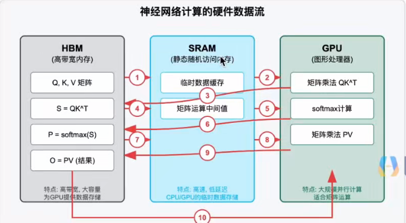
核心问题：Attention 往往不是“算得慢”，而是“数据搬得慢”。 在典型场景下，GPU 计算单元利用率可能只有约 10%-30%，瓶颈来自 HBM 与 SRAM 之间的数据传输。
3.3 Flash Attention 的对应思路¶
Flash Attention 的核心不是修改 Attention 公式，而是修改数据访问方式：只把能够放进 SRAM 的 $Q、K、V$ 小块（tile）加载到片上，完成局部矩阵乘法、softmax 和 $V$ 的加权累积，避免把完整的 $N\times N$ 分数矩阵 $S$ 与概率矩阵 $P$ 写回 HBM。
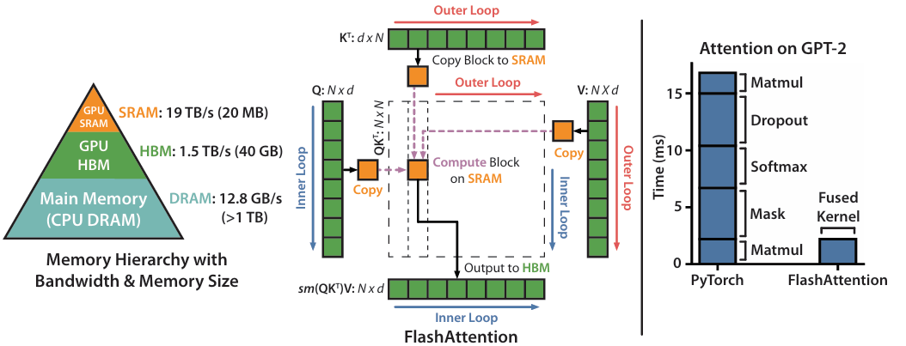
3.3.1 核心洞察：中间矩阵不必物化¶
标准 Attention 最终只需要输出：
$$ O=PV $$
其中 $O$ 的形状是 $N\times d$；中间的 $S=QK^T/\sqrt d$ 和 $P=softmax(S)$ 都是 $N\times N$，并不需要完整保存。Flash Attention 让一个 $Q$ 块在 SRAM 中保持驻留，依次读取所有 $K/V$ 块，在 SRAM 内完成局部计算，最后只把输出块 $O_i$ 写回 HBM。
3.3.2 难点：softmax 需要整行信息¶
对一行分数 $S_i$ 做稳定 softmax 时，需要知道整行最大值和指数和：
$$ P_{ij}=\frac{\exp(S_{ij}-m_i)}{\ell_i},\qquad m_i=\max_j S_{ij},\qquad \ell_i=\sum_j\exp(S_{ij}-m_i) $$
如果只处理一半数据，得到的最大值和分母都可能错误。因此，简单地逐块 softmax 再拼接并不等价。Flash Attention 使用 Online Softmax，边扫描 tile 边维护当前最大值 $m$ 与归一化指数和 $\ell$，当遇到更大的值时同步修正旧结果。
3.3.3 Online Softmax 的递推¶
设当前已经处理前一块，维护：
$$ m^{(old)}=\max(x^{(old)}),\qquad \ell^{(old)}=\sum_j\exp(x_j^{(old)}-m^{(old)}) $$
新 tile 到来后，先更新最大值：
$$ m^{(new)}=\max\left(m^{(old)},\max_j x_j^{(tile)}\right) $$
再把旧的指数和换算到新的最大值基准：
$$ \ell^{(new)}=\ell^{(old)}\exp\left(m^{(old)}-m^{(new)}\right)+\sum_j\exp\left(x_j^{(tile)}-m^{(new)}\right) $$
第一项是旧 tile 的贡献，第二项是新 tile 的贡献。这个递推是精确的，不是近似。
例子：¶
一行分数为 $[1,3,2,4]$，分成两块 $[1,3]$ 和 $[2,4]$。第一块得到 $m^{(old)}=3$、$\ell^{(old)}=e^{-2}+1\approx1.1353$；处理第二块后，$m^{(new)}=4$，旧贡献为 $1.1353e^{-1}\approx0.4178$，新贡献为 $e^{-2}+1\approx1.1353$，所以：
$$ \ell^{(new)}=0.4178+1.1353=1.5531 $$
这与一次性对完整行计算得到的指数和约 $1.553$ 一致，说明分块扫描仍能得到正确 softmax。
3.3.4 Online 更新输出 $O$¶
Attention 还需要计算 $PV$。因此除了 $m$ 和 $\ell$，Flash Attention 还维护当前输出累积值 $O$。遇到新 tile 时，先用最大值变化修正旧输出，再加入当前 tile 的贡献，最后除以新的 $\ell$：
$$ O^{(new)}=\frac{O^{(old)}\ell^{(old)}\exp(m^{(old)}-m^{(new)})+\exp(S^{(tile)}-m^{(new)})V^{(tile)}}{\ell^{(new)}} $$
因此每个 $Q$ 行块只需维护三个状态：当前最大值 $m$、归一化指数和 $\ell$、输出累积值 $O$。完整的 $S/P$ 从未产生，只有 SRAM 中很小的局部 tile。
3.3.5 Flash Attention 的完整计算流程¶
输入 Q、K、V（位于 HBM）
↓
外层：取一个 Q 块 Q_i，加载到 SRAM
↓
初始化 m_i=-∞，ℓ_i=0，O_i=0
↓
内层：依次加载 K_j、V_j 到 SRAM
↓
计算 S_ij=Q_iK_j^T/√d，只保留 [B_q,B_k] 小块
↓
用 Online Softmax 更新 m_i、ℓ_i 和 O_i
↓
处理完所有 K/V 块后，把 O_i 写回 HBM
伪代码如下：
for Q_i in Q_blocks:
m = -inf
l = 0
O = 0
for K_j, V_j in KV_blocks:
S = Q_i @ K_j.T / sqrt(d)
m_new = max(m, row_max(S))
P = exp(S - m_new)
l_new = l * exp(m - m_new) + row_sum(P)
O = (O * l * exp(m - m_new) + P @ V_j) / l_new
m, l = m_new, l_new
write_to_HBM(O)
3.3.6 为什么能够加速¶
Flash Attention 将中间矩阵的存储从完整的 $N\times N$ 降为 SRAM 中的 $B_q\times B_k$ tile，减少了 HBM 读写和显存占用。它可能因为在线更新而增加少量指数运算，但整体瓶颈从数据搬运转向更充分利用 GPU 计算单元，因此在长序列场景下通常能获得明显加速。其数学结果与标准 Attention 等价，不需要牺牲精度。
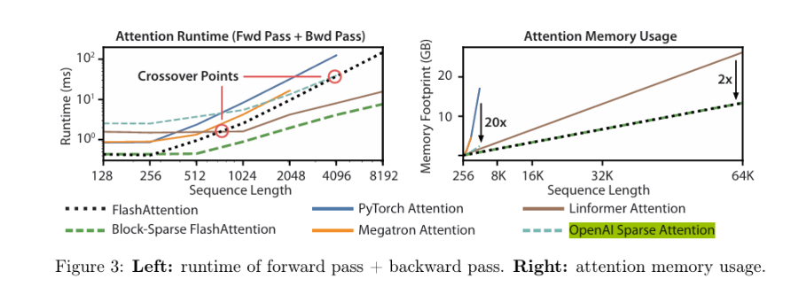
序列长度达到一定值时相较于普通attention，flash attention 加速效果越发明显；显存占用显著降低
2026/9/2¶
KV Cache¶
1.1 KV Cache 的作用¶
在自回归生成（逐个 token 解码）时，新 token 的 Query（Q）需要与当前序列中所有 token 的 Key（K）进行注意力计算，并使用对应的 Value（V）得到输出。若每生成一个新 token 都重新计算历史 token 的 K 和 V，就会重复进行大量相同的计算。
KV Cache 的做法是：计算出历史 token 的 K、V 后将它们缓存下来。后续生成新 token 时，只需要计算新 token 的 Q、K、V，并将新的 K、V 追加到缓存中；Q 只需与缓存中已有的 K、V 进行注意力计算。
对于当前长度为 $N$ 的序列，新 token 的 Q 可以看作形状为 $[1, d]$ 的矩阵，缓存中的 K 可以看作形状为 $[N, d]$ 的矩阵。因此，单个新 token 的注意力计算可表示为：
$$ Q_{new}K_{cache}^{T}: [1,d] @ [d,N] \rightarrow [1,N] $$
只需要沿着当前序列长度 $N$ 进行计算，而不必反复计算所有历史 token 之间的注意力。于是，解码阶段每生成一个 token 的注意力计算复杂度可以从 $O(N^2)$ 降低为 $O(N)$。需要注意：这里描述的是单步解码复杂度；输入提示词首次处理的 prefill 阶段仍然需要进行完整的注意力计算。
1.2 KV Cache 的显存占用¶
KV Cache 需要为每一层、每个 batch 中的每条序列保存 K 和 V 两组张量。常用的显存占用估算公式为：
$$ \text{显存占用} = 2 \times \text{精度} \times \text{层数} \times \text{Embedding维度} \times \text{最大序列长度} \times \text{Batch Size} $$
该公式估算的是存储 K、V 元素本身所需的空间，实际运行时还可能有额外的临时张量、内存对齐和框架管理开销。
公式中的各项含义如下：
2：表示需要同时保存两组缓存，即 Key Cache 和 Value Cache。在 Transformer 的自注意力机制中，每个 token 会产生 Q、K、V 三个向量；生成后续 token 时，历史 token 的 Q 不再需要保存，但历史 token 的 K 和 V 仍会被反复使用，因此只缓存 K、V。
精度（Precision）：表示每个 K/V 元素占用的字节数。常见取值包括：
fp16或bf16：通常每个元素占用 2 字节；fp32：每个元素占用 4 字节；int8：每个元素占用 1 字节。
因此，KV Cache 使用的精度越高，显存占用越大。实际系统也可能使用 KV Cache 量化来降低这部分开销。
层数（Number of Layers）：表示 Transformer 中 Encoder 或 Decoder 层的数量。对于仅 Decoder 的生成式模型，就是 Decoder 层数。每一层都有自己的 Attention 模块，因此每一层都需要保存对应的 K/V Cache。层数越多，KV Cache 的显存占用越大。
Embedding 维度（Embedding Dimension / Hidden Size）：通常指模型的隐藏维度 $d_{model}$。在多头注意力（Multi-Head Attention）中，每个头的 K、V 维度通常为 $d_k$、$d_v$，而所有头拼接后的总维度为：
$$ d_{model}=n_{heads}\times d_k=n_{heads}\times d_v $$
所以在标准多头注意力中，K Cache 和 V Cache 拼接后的最后一维通常都等于 $d_{model}$。更严格地说，公式中的这一项应替换为每层 K 或 V 的实际元素维度；在 GQA/MQA 等结构中，K/V 头数可能少于 Query 头数，因此不能直接套用 Query 的头数。
最大序列长度（Maximum Sequence Length）：表示模型能够处理或为其预留缓存空间的最大 token 数量，也就是上下文窗口大小。序列越长，需要保存的历史 K、V 越多，KV Cache 的显存占用与序列长度近似成正比。生成过程中，缓存会随着序列长度逐步增长，直到达到最大长度。
Batch Size：表示同时处理的独立输入序列数量。每条序列都有自己的 KV Cache，因此 batch size 增大时，总显存占用也近似线性增加。
1.3 一个简单的估算例子¶
假设模型有 32 层，隐藏维度为 4096，最大序列长度为 2048，Batch Size 为 1，并使用 fp16（2 字节）：
$$ 2 \times 2 \times 32 \times 4096 \times 2048 \times 1\ ext{ bytes} \approx 1\ ext{GB} $$
这个结果只包含 K/V 数据本身，不包含模型权重和其他运行时开销；实际显存需求通常会略高于估算值。
VLLM¶
2.1 为什么需要 PagedAttention¶
在大模型推理时，KV Cache 往往是显存消耗的重要组成部分。传统实现通常会按照每条请求可能达到的最大序列长度，提前为它分配一大段连续的 KV Cache 显存。但生成长度通常是不确定的，这会带来明显的显存浪费：
- KV Cache 预分配但没有用到：请求实际生成长度小于预设最大长度时，剩余空间一直被占用。
- KV Cache 已分配但暂时没有使用：不同请求的生成进度不同，已经分配的空间中可能有一部分暂时空闲。
- 内部碎片：即使总空闲显存足够，连续显存空间不足，也可能无法为新的请求分配一整段连续区域。
因此，传统 KV Cache 的实际利用率可能只有约 20%~40%。其根本问题是：KV Cache 被当作一整段连续数组管理，而请求的长度又具有动态性。
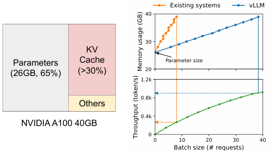
推理显存占用以及vllm性能
2.2 PagedAttention 的核心思想¶
vLLM 借鉴操作系统虚拟内存和分页的思想，将 KV Cache 划分为固定大小的 block（也可称为 page），并把逻辑上的连续 token 序列映射到显存中不必连续的物理 block 上。Attention 计算时，再通过 block table 找到这些 block 的实际位置。
可以把它理解成两层地址空间：
- 逻辑 KV blocks：从请求视角看到的 KV Cache。序列中的 token 按顺序被划分为 Block 0、Block 1、Block 2……，逻辑上连续。
- 物理 KV blocks：GPU 显存中真正存放 K/V 的固定大小物理块。它们可以分散在显存的不同位置，不要求连续排列。
- Block Table：记录逻辑 block 到物理 block 的映射关系。例如，某条请求的逻辑 Block 0 可能映射到物理 Block 7，逻辑 Block 1 映射到物理 Block 1，逻辑 Block 2 映射到物理 Block 3。
因此，逻辑序列即使是连续的，物理显存也可以是离散的。PagedAttention kernel 根据 block table 读取正确的 K/V block，并完成与普通 Attention 等价的计算。
2.3 PagedAttention 的四个关键机制¶
1. 不连续存储¶
PagedAttention 不要求一条请求的 KV Cache 占据一大片连续显存。只要有足够数量的空闲物理 block，就可以把新的 KV Cache block 分配到任意位置。这样可以有效避免因连续空间不足而导致的分配失败。
2. 分成固定大小的 Pages/Blocks¶
每个 page 或 block 只能存放固定数量 token 的 K/V。例如 block size 为 4 时，每个 block 可以保存 4 个 token 在各层对应的 K/V 数据。一个长度为 10 的序列需要 3 个逻辑 block：前两个 block 各保存 4 个 token，最后一个 block 保存剩余 2 个 token。
最后一个 block 往往不能被完全填满，这会产生少量内部碎片；但碎片只发生在当前序列的尾部 block，而不是为整条最大长度序列预留大量空间，因此浪费通常显著减少。
3. Block Table 完成逻辑地址到物理地址的映射¶
对每条请求，vLLM 都维护一个 block table。表中的第 $i$ 项记录逻辑 Block $i$ 对应的物理 block 编号。Attention kernel 根据这个表定位 K/V：
$$ \text{physical\_block\_id}=\text{block\_table}[\text{logical\_block\_id}] $$
再结合 block 内的 token 偏移量，就能得到某个 token 的 K/V 在物理 KV Cache 中的位置。这个过程类似虚拟内存通过页表把虚拟页转换为物理页。
4. 按需分配¶
只有当生成结果实际需要更多 token、当前 block 已经填满时，vLLM 才会从空闲 block 池中分配新的物理 block，并更新 block table。请求结束后，它占用的物理 block 可以立即回收到空闲池中，供其他请求使用。
2.4 一个请求的映射示例¶
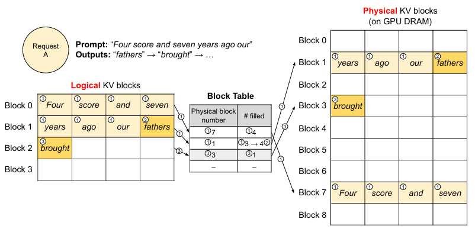
逻辑KV与物理KV blocks的映射过程
filled 表示这个block填入了多少token；圆圈数字代表token生成顺序
请求 A 的 prompt 为：Four score and seven years ago our。假设每个 block 可以保存 4 个 token，则它的逻辑 KV Cache 可以划分为：
| 逻辑 block | 保存的 token |
|---|---|
| Block 0 | Four、score、and、seven |
| Block 1 | years、ago、our、fathers |
| Block 2 | brought |
实际生成过程中，逻辑 block 不需要按顺序放入物理显存。例如 block table 可以记录：
| 逻辑 block | 物理 block |
|---|---|
| Block 0 | 7 |
| Block 1 | 1 |
| Block 2 | 3 |
于是，逻辑上连续的 Four score and seven years ago our fathers brought，在物理显存中可能分散存放于 Block 7、Block 1 和 Block 3。PagedAttention 在计算时通过 block table 依次读取它们，因此不会改变 Attention 的数学结果。
2.5 多请求与 Prefix Sharing¶
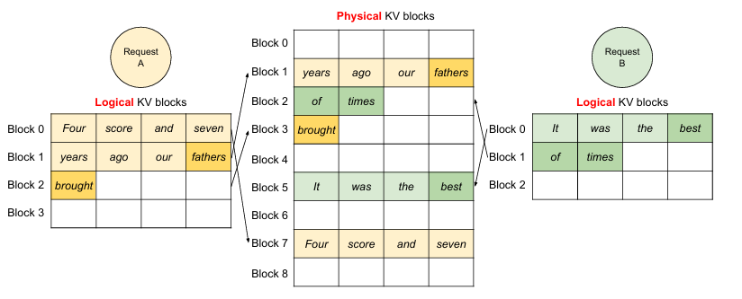
同时存储不同请求
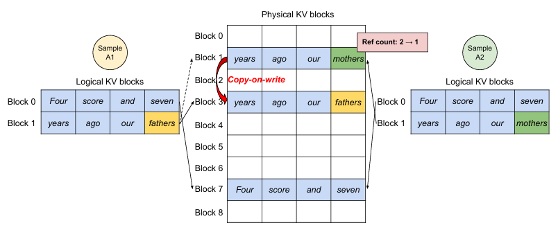
共享 KV Cache
当请求 A 和请求 B 具有相同的前缀时，它们对应前缀的 KV Cache 可以共享，而不必为每个请求复制一份相同内容。例如多个请求都包含相同的系统提示词或 few-shot 示例时，vLLM 可以让它们的逻辑 block 指向同一个物理 block，并通过引用计数管理共享 block。
当某个请求继续生成并需要修改共享前缀对应的 block 时，可以采用写时复制（Copy-on-Write）：先为该请求分配新的物理 block，再进行写入，避免影响其他仍在使用原 block 的请求。
2.6 PagedAttention 带来的收益¶
- 减少显存浪费：按 block 分配，避免按照最大序列长度预留一整段连续空间。
- 提高显存利用率：空闲物理 block 可以被不同请求动态复用，减少内部碎片和外部碎片。
- 提升并发能力：在相同显存下可以同时服务更多请求，或者支持更长的上下文。
- 支持灵活的请求调度：不同请求的长度和生成速度可以不同，KV Cache 不必互相占用预留空间。
- 支持 KV Cache 共享：相同前缀可以复用物理 block，进一步减少重复存储。
2.7 PagedAttention 与 FlashAttention 的区别¶
两者优化的对象不同，但可以配合使用：
| 方法 | 主要解决的问题 | 核心手段 |
|---|---|---|
| FlashAttention | Attention 计算过程中的 HBM/SRAM 访存和中间矩阵开销 | 对 Q/K/V 分块，在片上完成局部计算，避免物化完整的 $N\times N$ 矩阵 |
| PagedAttention | 推理服务中 KV Cache 的显存分配、碎片和共享问题 | 将 KV Cache 分成 block，通过 block table 映射到不连续物理显存，并按需分配 |
2.8 vLLM 的效果¶
vLLM 通过 PagedAttention、KV Cache 管理和连续批处理等机制，主要改善大模型推理服务中的吞吐量、延迟和显存利用率。实际收益会受到模型结构、硬件、输入输出长度、并发请求数、batch size 和采样策略等因素影响。
1. 吞吐量（Throughput）提升¶
吞吐量通常表示单位时间生成的 token 数量，或者单位时间完成的请求数量。与 Hugging Face Transformers 的基础推理方式相比，vLLM 在特定模型、硬件和请求分布下，吞吐量可能获得约 2 倍到 10 倍的提升；一些资料中给出的典型结果甚至接近 24 倍，但这并不是所有场景都能达到的固定数值。
vLLM 吞吐量提升的主要原因包括：
- PagedAttention 减少 KV Cache 浪费：将 KV Cache 划分为固定大小的 block，按实际生成长度分配，释放了原本被预留但没有使用的显存。
- 更高的显存利用率：物理 block 可以被不同请求动态复用，使 GPU 能够容纳更多并发请求。
- 连续批处理（Continuous Batching）：请求完成后可以立即从批处理中移除，并将新的请求加入，而不必等待整个静态 batch 同时结束。
- 高效的 CUDA Attention kernel：减少 KV Cache 访问和 Attention 计算中的额外开销。
因此，在需要同时处理大量请求、请求长度差异较大，或者 prompt 和生成结果长度动态变化的服务场景中，vLLM 的优势通常更加明显。
2. 加速比（Speedup）与延迟（Latency）¶
加速比可以表示为：
$$ \text{Speedup}=\frac{\text{基准系统耗时}}{\text{vLLM 耗时}} $$
延迟则可以按不同口径衡量，例如单个请求的总耗时、首 token 延迟（TTFT，Time To First Token）和相邻 token 之间的生成延迟（ITL，Inter-Token Latency）。vLLM 最突出的优化目标通常是整体吞吐量，因此单个请求的端到端延迟不一定始终按照吞吐量的比例下降。
在高并发场景下，vLLM 可以通过更充分地填满 GPU、动态调度不同长度的请求来提高整体处理效率。对于 Beam Search 或多个请求共享相同前缀的场景，PagedAttention 的 KV Cache 共享机制还可以减少重复计算和重复存储，从而降低特定请求的计算延迟。
需要区分两类情况：
- 单请求、低并发：模型本身的矩阵计算和访存往往是主要瓶颈，vLLM 的吞吐量优势可能不明显。
- 多请求、高并发：KV Cache 管理、动态批处理和显存利用率对性能影响更大，vLLM 通常更容易获得明显收益。
3. 显存效率提升¶
传统 KV Cache 管理方式可能只利用了预分配空间的约 20%~40%，原因是请求长度不确定，且连续显存分配会产生较多空闲区域和碎片。
PagedAttention 将 KV Cache 切分成 pages/blocks，并根据请求的实际长度逐块分配。除当前序列最后一个未填满的 block 外，已分配的 block 基本都对应实际存在的 token，因此显存利用率可以达到约 96% 的水平。这个数值同样属于特定测试条件下的典型结果，实际利用率还会受到 block size、请求长度分布、共享前缀比例和运行时开销影响。
显存效率提升后，在同一块 GPU 上可以：
- 同时容纳更多并发请求；
- 支持更长的上下文窗口；
- 减少因显存碎片导致的请求排队或分配失败；
- 让相同前缀的多个请求共享 KV Cache，避免重复保存。
4. 效果总结¶
vLLM 的核心价值不是简单地把单次 Attention 运算变快，而是针对 LLM 服务的动态、多请求推理过程优化 KV Cache 和请求调度：PagedAttention 负责高效管理和共享 KV Cache，连续批处理负责动态填充 GPU 计算资源，高效 kernel 负责降低底层计算与访存开销。三者结合后，通常可以在相同硬件上提高服务吞吐量，并提升显存利用率。